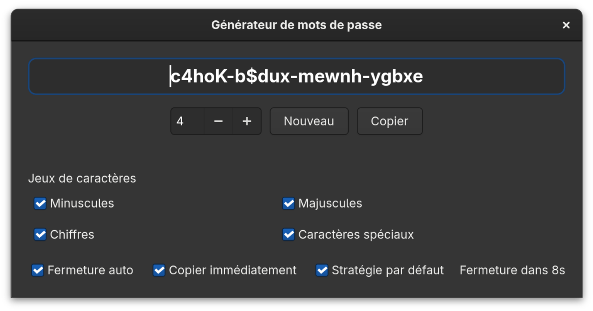
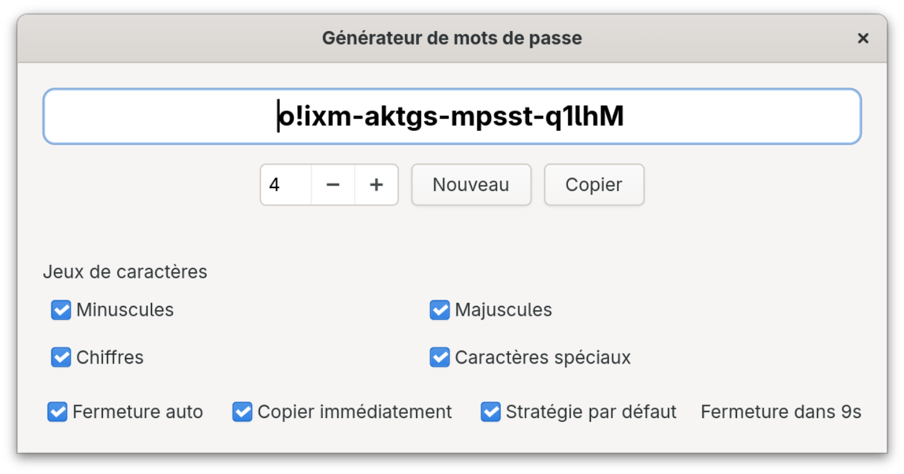

Logiciel libre · GNOME · entièrement hors ligne
Mot de passe robuste. Rien que pour vous.
Générateur de mots de passe est une application GTK4 native pour GNOME. Elle crée des mots de passe cryptographiquement robustes directement sur votre ordinateur — par groupes de cinq caractères, à un clic du presse-papiers. Pas de réseau. Pas de cloud. Pas de télémétrie.
hT4k#-qW9m!-Lp2xZ
Robustesse
La valeur exacte, une évaluation et la durée estimée d’une attaque par force brute — avec l’hypothèse clairement indiquée (10¹² essais/s, hachage rapide), pas comme argument publicitaire.
01 Avantages
Votre mot de passe reste sur votre ordinateur.
Tout s’exécute localement, dans une application GTK4 distribuée en Flatpak. Aucun serveur ne peut stocker, perdre ou partager quoi que ce soit — et vous n’avez rien à configurer pour cela.


100 % hors ligne
Aucun accès réseau — ni dans le Flatpak, ni dans le code. Pas de compte, pas de cloud, pas de télémétrie : il n’y a tout simplement rien qui puisse être perdu, volé ou vendu.
Aléa cryptographique
Chaque caractère provient du générateur de nombres aléatoires du système d’exploitation (OsRng) — la source à laquelle les logiciels de chiffrement puisent leurs clés.
Groupes de cinq
abcde-FGHIJ-12345 se lit, se dicte et se tape plus facilement qu’une bouillie de caractères — et la longueur se voit d’un coup d’œil.
Une robustesse honnête
Entropie exacte, évaluation et durée d’attaque estimée. L’hypothèse retenue (10¹² essais/s, hachage rapide) est affichée — et la stratégie par défaut n’est jamais présentée comme plus robuste qu’elle ne l’est.
Un clic, c’est fait
Le mot de passe part directement dans le presse-papiers, dès le démarrage si vous le souhaitez, avec une confirmation visible. Ensuite, la fenêtre se ferme d’elle-même : le mot de passe disparaît de l’écran, mais peut toujours être collé.
Conforme à toute politique
Minuscules, majuscules, chiffres et caractères spéciaux se désactivent séparément. La stratégie par défaut garantit au moins une majuscule, un chiffre et un caractère spécial.
Huit langues
Français, allemand, anglais, espagnol, italien, japonais, suédois et ukrainien — l’interface suit la langue du système.
Bien intégrée au système
Clair ou sombre selon le réglage du système. Entrée génère un nouveau mot de passe, Ctrl+W ferme la fenêtre, Ctrl+Q quitte l’application — pas besoin de souris.
02 Sécurité
Généré localement, stocké nulle part.
Le générateur est volontairement petit : GTK4 pour l’interface, rand pour l’aléa, quelques bibliothèques Wayland pour le presse-papiers. Pas de compte, pas de connexion externe, pas de service en arrière-plan. Les propriétés essentielles :
a.Pas de réseau
Le Flatpak ne demande pas --share=network et le code ne contient aucun accès réseau. Même s’il le voulait, le générateur ne pourrait rien envoyer.
b.Ni journal, ni historique
Les mots de passe n’apparaissent jamais dans la console ni dans le journal système, et ne sont jamais écrits sur le disque. Seuls vos réglages sont enregistrés.
c.Peu de temps à l’écran
Avec « Fermeture auto », l’application se ferme au bout de 10 secondes ; un clic dans la fenêtre interrompt le compte à rebours. Le mot de passe reste dans le presse-papiers jusqu’à ce que vous copiiez autre chose — si vous utilisez un historique du presse-papiers, supprimez-le de celui-ci.
d.Vérifiable
Open source sous licence CC BY-SA 4.0 : la génération, le calcul de l’entropie et l’estimation de la robustesse sont vérifiables dans le code et couverts par des tests.
Contact: https://github.com/danst0/passwordgenerator/security/advisories/new Expires: 2027-10-17T00:00:00.000Z Policy: https://github.com/danst0/passwordgenerator/blob/main/SECURITY.md Preferred-Languages: en, de Canonical: https://passwort.dumke.me/.well-known/security.txt
Vous avez trouvé une vulnérabilité ? Signalez-la en privé via GitHub, et non dans un ticket public. J’accuse généralement réception sous 72 heures ; les détails sont publiés une fois le correctif disponible.
03 Installer
Une commande, et c’est installé.
Flathub
La méthode recommandée sur toutes les distributions Linux : actuellement sur le runtime GNOME 50 et mise à jour automatiquement à chaque nouvelle version.
Depuis le code source
Avec Rust et les bibliothèques de développement GTK4 — pour qui veut la compiler ou la modifier soi-même.
Code source sur GitHub